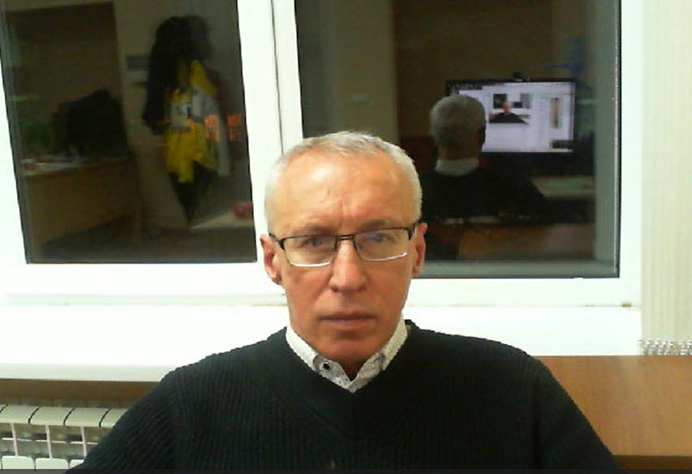

<!doctype html>
<html lang="ru">
  <head>
    <meta charset="utf-8">
    <meta name="viewport" content="width=device-width, initial-scale=1">
    <meta name="description" content="Портфолио Валерия Онучина: системное программирование, DevOps, научное и медицинское ПО, Scopus metrics и публикации.">
    <meta name="theme-color" content="#f5f3eb">
    <meta property="og:type" content="website">
    <meta property="og:title" content="Валерий Онучин — инженер-программист">
    <meta property="og:description" content="Системное программирование, DevOps, научное и медицинское ПО.">
    <title>Валерий Онучин — инженер-программист</title>
    <link rel="stylesheet" href="./style.css">
    <script src="./script.js" defer></script>
      <link rel="manifest" href="/manifest.json">
    <script data-goatcounter="https://x2v0.goatcounter.com/count" async src="//gc.zgo.at/count.js"></script>
    <script src="https://cdn.jsdelivr.net/npm/marked/marked.min.js"></script>

    <style>
        .portrait {
            width: 100% !important;
            height: 100% !important;
            object-fit: cover !important;
            object-position: center !important;
        }
        .portrait-frame {
            width: 250px !important;
            height: 250px !important;
            overflow: hidden !important;
            border: 1px solid #ddd !important;
        }
    </style>
</head>
  <body>
    <header class="topbar" id="top">
      <a class="brand" href="#top" aria-label="Валерий Онучин — главная">
        
        <span>Валерий Онучин</span>
      </a>
      <button id="theme-toggle" type="button" style="background:none; border:none; font-size:20px; cursor:pointer; margin-left:15px;" title="Сменить тему">🌙</button>
      <button class="nav-menu" id="menu-toggle" type="button" aria-controls="site-navigation" aria-expanded="false" aria-label="Открыть меню">
        <span></span>
        <span></span>
      </button>
      <nav class="main-nav" id="site-navigation" aria-label="Основная навигация">
        <a href="#publications">Публикации</a>
        <a href="#portfolio" id="nav-portfolio">Portfolio</a>
        <a href="#blog" id="nav-blog">Блог</a>
        <a href="#resume" data-resume-link>Резюме</a>
        
      </nav>
    </header>

    <main class="layout" id="home-page">
      <aside class="profile" aria-label="Профиль">
        <div class="portrait-frame">
          
        </div>
        <h2 class="profile-name">Валерий Онучин</h2>
        <p class="profile-role">Senior Software Engineer: C++, Go, cross-compilation, Linux kernel, CI/CD, Android</p>
        
        
<div class="profile-rule" aria-hidden="true"></div>
        <div class="profile-meta">
          <span><span class="meta-label">📍 LOC</span>Протвино, Московская область</span>
          <div>
            <a href="mailto:valeriy.onuchin@ya.ru" id="email-link"><span class="meta-label">✉️ MAIL</span>valeriy.onuchin@ya.ru</a>
            
          </div>
          <a href="https://github.com/x2v0" target="_blank" rel="noopener noreferrer"><span class="meta-label">🐙 GIT</span>github.com/x2v0</a>
          <a href="https://www.scopus.com/authid/detail.uri?authorId=8401982000" target="_blank" rel="noopener noreferrer"><span class="meta-label">🔬 SCOPUS</span>Author profile</a>
          <a href="https://orcid.org/0009-0000-3022-3529" target="_blank" rel="noopener noreferrer"><span class="meta-label">🆔 ORCID</span>0009-0000-3022-3529</a>
        </div>
      </aside>

      <div class="content">
        <section class="hero" aria-labelledby="page-title">
          <p class="eyebrow">Senior Software Engineer · Protvino, Russia</p>
          <h1 id="page-title">Валерий Онучин <span>— Senior Software Engineer</span></h1>
          <p class="hero-subtitle">Прикладное и системное программирование, разработка научного и медицинского ПО, DevOps.</p>
          <div class="hero-note">
            <span class="hero-note-mark">ROOT / CERN</span>
            <span><strong>Соавтор пакета <a href="https://ru.wikipedia.org/wiki/ROOT" target="_blank" rel="noopener noreferrer" style="color: #0288d1; text-decoration: underline;">ROOT (CERN)</a></strong> — использовался при открытии бозона Хиггса.</span>
          </div>
        </section>

        <section class="section reveal" id="qualification">
          <div class="section reveal-head">
            
            <h2 class="section reveal-title">🎓 Квалификация</h2>
            <span class="section reveal-caption">ИНСТРУМЕНТАРИЙ И ЭКСПЕРТИЗА</span>
          </div>
          <p class="qualification">Прикладное и системное программирование, разработка научного и медицинского ПО, DevOps.</p>
          <table class="skills-table">
            <thead>
              <tr><th scope="col">Область</th><th scope="col">Технологии</th></tr>
            </thead>
            <tbody>
              <tr><th scope="row">Языки</th><td><span class="tech-tag">C++</span>, <span class="tech-tag">C#</span>, <span class="tech-tag">Kotlin</span>, <span class="tech-tag">Python</span>, <span class="tech-tag">bash</span>, <span class="tech-tag">PowerShell</span>, <span class="tech-tag">Go</span></td></tr>
              <tr><th scope="row">Сборка</th><td>CMake, Meson/Ninja, autotools, Make, msbuild, pkg-config</td></tr>
              <tr><th scope="row">DevOps</th><td>Docker, CI/CD, кросс-компиляция, ядро Linux, сборка ОС</td></tr>
              <tr><th scope="row">Платформы</th><td>Linux, Windows, Android, Эльбрус-2000, Скиф (aarch64)</td></tr>
              <tr><th scope="row">Экспертиза</th><td>Высоконагруженные системы, кросс-платформенная сборка, научные данные, медицинское ПО</td></tr>
            </tbody>
          </table>
        </section>

        <section class="section reveal" id="experience">
          <div class="section reveal-head">
            
            <h2 class="section reveal-title">💼 Опыт работы</h2>
            <span class="section reveal-caption">2004 — 2025</span>
          </div>
          <div class="career-list">
            <article class="career-item">
              <h3>АО НПЦ ЭЛВИС <span class="career-date">(2025 – 12/2025)</span> <span class="career-role">· Инженер-программист.</span></h3>
              <p>Разработка «Альтель ОС» под Эльбрус-2000 и Скиф (aarch64), кросс-компиляция.</p>
            </article>
            <article class="career-item">
              <h3>ОИЯИ, Дубна <span class="career-date">(2022 – 2024)</span> <span class="career-role">· Системный программист.</span></h3>
              <p>Автоматическая сборка Linux-дистрибутива (200+ пакетов) на Python и bash.</p>
            </article>
            <article class="career-item">
              <h3>АО ПРОТОМ, Протвино <span class="career-date">(2009 – 2021)</span> <span class="career-role">· Ведущий разработчик медицинского ПО.</span></h3>
              <p>Клиент-серверная система протонной терапии.</p>
            </article>
            <article class="career-item">
              <h3>ЦЕРН, Женева <span class="career-date">(2004 – 2008)</span> <span class="career-role">· Соавтор ROOT.</span></h3>
            </article>
          </div>
        </section>

        <section class="section reveal" id="scopus">
          <div class="section reveal-head">
            
            <h2 class="section reveal-title">Scopus Metrics</h2>
            <a class="section reveal-caption external-link" href="https://www.scopus.com/authid/detail.uri?authorId=8401982000" target="_blank" rel="noopener noreferrer">SCOPUS PROFILE ↗</a>
          </div>
          <p class="affiliation-label">Affiliation</p>
          <p class="affiliation">Joint Institute for Nuclear Research, Dubna, Russian Federation</p>
          <div class="metric-grid">
            <article class="metric-card">
              <span class="metric-label">h-index</span>
              <strong>43</strong>
            </article>
            <article class="metric-card">
              <span class="metric-label">Documents</span>
              <strong>78</strong>
            </article>
            <article class="metric-card metric-card-wide">
              <span class="metric-label">Citations</span>
              <strong>15,108</strong>
              <span class="metric-note">by 10,394 documents</span>
            </article>
          </div>
        </section>

        <section class="section reveal reveal" id="publications">
          <div class="section reveal-head">
            
            <h2 class="section reveal-title">📚 Key Publications</h2>
            <span class="section reveal-caption">SELECTED WORK</span>
          </div>
          <ol class="publication-list">
            <li>
              <span class="publication-title">The ALICE experiment at the CERN LHC</span>
              <span class="publication-year">2008</span>
              <strong class="publication-citations">1,996 citations</strong>
            </li>
            <li>
              <span class="publication-title">ROOT - A C++ framework for petabyte data storage, statistical analysis and visualization</span>
              <span class="publication-year">2009</span>
              <strong class="publication-citations">421 citations</strong>
            </li>
            <li>
              <span class="publication-title">The magnetized steel and scintillator calorimeters of the MINOS experiment</span>
              <span class="publication-year">2008</span>
              <strong class="publication-citations">294 citations</strong>
            </li>
            <li>
              <span class="publication-title">ROOT-A C++ framework for petabyte data storage, statistical analysis and visualization</span>
              <span class="publication-year">2011</span>
              <strong class="publication-citations">126 citations</strong>
            </li>
          </ol>
        
            <details class="orcid-details" style="margin-top: 30px; border-top: 1px solid var(--border-color, #ddd); padding-top: 20px; margin-bottom: 20px;">
                <summary style="cursor: pointer; font-weight: bold; font-size: 18px; color: #0288d1; outline: none; display: list-item; padding: 10px 0;">
                    📚 All Publications (ORCID) — нажмите, чтобы раскрыть список
                </summary>
                <div style="padding-top: 15px;">
                    <input type="text" id="pub-search" placeholder="Поиск по названию или году..." style="width: 100%; padding: 10px; margin-bottom: 15px; border: 1px solid #ccc; border-radius: 5px; font-family: inherit; box-sizing: border-box;">
                    <div id="orcid-publications-list" style="font-size: 14px; line-height: 1.6;">
                        <p style="color: #666;">Loading publications from ORCID...</p>
                    </div>
                </div>
            </details>
            </section>

        <section class="section reveal" id="projects">
          <div class="section reveal-head">
            
            <h2 class="section reveal-title">Проекты</h2>
            <span class="section reveal-caption">ANDROID · HTTP</span>
          </div>
          <article class="project">
            <div class="project-top">
              <h3 class="project-name">mtapi</h3>
              <span class="project-kicker">Android HTTP bridge</span>
            </div>
            <p>Android HTTP bridge: 60+ API endpoints, debug overlay, browser.</p>
            <div class="project-links">
              <a href="https://x2v0.github.io/mtapi/demo/" target="_blank" rel="noopener noreferrer">Demo (mock)</a>
              <a href="https://github.com/x2v0/mtapi" target="_blank" rel="noopener noreferrer">GitHub</a>
            </div>
          </article>
          
        </section>

        
<section class="section reveal reveal" id="contact" style="margin: 40px auto; max-width: 600px; width: 90%;">
        <h2 class="section reveal-title">Связаться со мной</h2>
        <form id="contact-form" style="display: flex; flex-direction: column; gap: 10px; max-width: 500px;">
            <input type="text" id="c-name" placeholder="Ваше имя" required style="padding: 10px; border: 1px solid #ccc; border-radius: 4px;">
            <input type="email" id="c-email" placeholder="Ваш Email" required style="padding: 10px; border: 1px solid #ccc; border-radius: 4px;">
            <textarea id="c-msg" placeholder="Сообщение..." rows="4" required style="padding: 10px; border: 1px solid #ccc; border-radius: 4px;"></textarea>
            <button type="submit" style="padding: 10px; background: #0288d1; color: white; border: none; border-radius: 4px; cursor: pointer;">Отправить</button>
        </form>
    </section>
    <footer class="footer">
          <span>© <span id="current-year">2026</span> Валерий Онучин</span>
          <a href="https://github.com/x2v0" target="_blank" rel="noopener noreferrer">github.com/x2v0 ↗</a>
        </footer>
      </div>
    
    
    
      
    </main>

    <main class="resume-page" id="resume-page" hidden>
      <button onclick="window._showHome && window._showHome()" style="margin-bottom: 20px; padding: 10px 15px; background: #0288d1; color: white; border: none; border-radius: 5px; cursor: pointer; font-size: 16px; font-family: inherit; display: inline-block;">← Назад на главную</button>
      
      
      <div id="resume-content" class="resume-content" style="padding: 20px;"><div style="font-size: 15px; line-height: 1.6; color: var(--text);"><h1>Резюме </h1><br>
<h2><strong>Онучин Валерий Анатольевич</strong></h2><br>
<br>
<strong>Senior Software Engineer | System Programming | DevOps</strong><br>
<br>
<br>
<br>
<h3> Контактная информация</h3><br>
<br>
<p>📞 +7 (916) 794-74-98 (только SMS) \</p><br>
<p>✉ valeriy.onuchin@yandex.ru (предпочтительный способ связи) \</p><br>
<p>📍 Протвино, Московская область \</p><br>
<p>🌐 <a href="https://github.com/x2v0?tab=repositories" target="_blank">github.com/x2v0</a> </p><br>
<br>
<p><hr></p><br>
<br>
<h2>Программирование</h2><br>
<br>
<br>
<p> Системное программирование, разработка научного и медицинского ПО, DevOps. Соавтор пакета <strong><a href="https://ru.wikipedia.org/wiki/ROOT" target="_blank">ROOT</a></strong> (CERN), использовавшегося при открытии бозона Хиггса.</p><br>
 <br>
<br>
<p>| Область | Технологии |</p><br>
<p>|<hr><hr><hr>|<hr><hr><hr><hr>|</p><br>
<p>| <strong>Языки</strong> | C++, C#, Kotlin, Python, bash, PowerShell |</p><br>
<p>| <strong>Сборка</strong> | CMake, Meson, autotools, Make, pkg-config, msbuild |</p><br>
<p>| <strong>DevOps</strong> | Docker, CI/CD, кросс-компиляция, системное программирование, ядро Linux, сборка ОС</p><br>
<p>| <strong>Платформы</strong> | Linux, Windows, Android, Эльбрус-2000, Скиф (aarch64/SoC) |</p><br>
<p>| <strong>Экспертиза</strong> | Разработка высоконагруженных систем, кросс-платформенная сборка,  анализ и визуализация научных  данных, медицинское ПО |</p><br>
<br>
<p><hr></p><br>
<br>
<h2>DevOps</h2><br>
<br>
<br>
<p>| Требование вакансии | Мой опыт |</p><br>
<p>|<hr><hr><hr><hr><hr><hr><hr>|<hr><hr><hr>-|</p><br>
<p>| Опыт с CI/CD (GitLab CI, GitHub Actions) | Настроил пайплайны для автоматической сборки Docker-образов и тестирования в проекте SPD (ОИЯИ). |</p><br>
<p>| Кросс-компиляция для нестандартных платформ | Разработка ОС для Эльбрус-2000 и aarch64 (АО НПЦ ЭЛВИС). Сборка Linux-дистрибутива под x86_64, e2k и aarch64. |</p><br>
<p>| Контейнеризация (Docker) | Создал Docker-образы для распределённых вычислений в эксперименте SPD (Geant4, ROOT, Gaudi). |</p><br>
<p>| Автоматизация сборки (CMake, Meson) | Разработал CMake-инфраструктуру для гетерогенной среды разработки. Опыт с autotools, Make, pkg-config. |</p><br>
<p>| Глубокое знание Linux | Сборка Linux-дистрибутива с нуля (<a href="https://github.com/x2v0/lfspd/blob/main/README.ru.md" target="_blank">`lfspd`</a> 200+ пакетов). Работа с ядром, chroot, системными компонентами. |</p><br>
<br>
<p><hr></p><br>
<br>
<li>Разговорный английский. \</li><br>
<p> Техническая документация.</p><br>
 <br>
<br>
<p><hr></p><br>
<br>
<br>
<h2><strong>Опыт работы</strong>  </h2><br>
<br>
<h3><strong>"АО НПЦ ЭЛВИС "</strong> *(март - декабрь 2025)* </h3><br>
<br>
<p>🔗 <a href="https://elvees.ru" target="_blank">elvees.ru</a></p><br>
<br>
<strong>Инженер-программист</strong><br>
<br>
<p>Разработка Альтель ОС на базе [Альт ОС](</p><br>
<p>https://www.basealt.ru)</p><br>
<p> под отечественные платформы <a href="https://ru.wikipedia.org/wiki/%D0%AD%D0%BB%D1%8C%D0%B1%D1%80%D1%83%D1%81_2000" target="_blank">Эльбрус-2000</a>, aarch64 <a href="https://support.elvees.com/docs/Microchips/SKIF/" target="_blank">Скиф процессор</a></p><br>
<br>
<p><hr></p><br>
<br>
<h3><strong>ОИЯИ, Дубна, Московская область</strong> *(2022 — 2024)*  </h3><br>
<p>🔗 <a href="https://jinr.ru" target="_blank">jinr.ru</a>  </p><br>
<br>
<strong>Программист-физик</strong>  <br>
<p>Разработка ПО для эксперимента <a href="https://spd.jinr.ru" target="_blank">SPD на коллайдере НИКА</a>:  </p><br>
<li>создание docker image для распределенных вычислений, включающий в себя</li><br>
<li style="margin-left:20px">моделирование детектора</li><br>
<li style="margin-left:20px">реконструкцию физических событий (Geant4, Pythia8, ROOT, Gaudi)  </li><br>
<br>
<strong>Избранные репозитории:</strong>  <br>
<li><a href="https://github.com/lfspd/lfspd/blob/main/README.ru.md" target="_blank">lfspd</a> — docker image для параллельных вычислений. Основан на https://linuxfromscratch.org</li><br>
<p>	Автоматическая сборка Linux дистрибутива ~200 пакетов, включающего математические, физические пакеты.</p><br>
<li style="margin-left:20px">Технологии: chroot, python, docker, bash, cmake, системы сборки и компиляторы  </li><br>
<li><a href="https://git.jinr.ru/x2v0/SpdCMake" target="_blank">SpdCMake</a> — CMake-функции для SPD эксперимента.  </li><br>
<br>
<p><hr></p><br>
<br>
<h3><strong>АО ПРОТОМ, Протвино, Московская область</strong> *(2009 — 2021)*  </h3><br>
<p>🔗 <a href="https://protom.ru" target="_blank">protom.ru</a>  </p><br>
<br>
<strong>Инженер-программист</strong>  <br>
<p> Разработка ПО для протонной терапии (лечение онкологии): 3D DICOM Viewer, система видеоконтроля пациента (C#, C++, реальное время), диагностика, базы данных.</p><br>
<br>
<strong>Избранные репозитории:</strong>  <br>
<li><a href="https://dicom2fmm.github.io" target="_blank">3D DICOM Viewer</a> — 3D просмотрщик, конвертер DICOM </li><br>
<li style="margin-left:20px">Технологии: C#, C++, DevExpress, DICOM</li><br>
<li><a href="https://x2v0.github.io/TM/docs" target="_blank">PFS/TM</a> <a href="https://github.com/x2v0/MainCClient.NET?tab=readme-ov-file" target="_blank">План облучения</a> — C#-реализация протокола обмена данными  </li><br>
<li><a href="https://x2v0.github.io/EBTfilm" target="_blank">EBTfilm</a> — обработка дозиметрических плёнок </li><br>
<li style="margin-left:20px">Технологии: C#, C++, ROOT </li><br>
<li><a href="https://x2v0.github.io/AlignPatient/HTML/" target="_blank">AlignPatient</a> — система видеоконтроля положения пациента  </li><br>
<li style="margin-left:20px">Технологии: C#, C++, COM, DirectShow, network, real time video editting</li><br>
<li style="margin-left:20px">Протоколы: multicast UDP, TCP/IP, RTP, SIP</li><br>
<br>
<p><hr></p><br>
<br>
<h3><strong>ЦЕРН, Женева, Швейцария</strong> *(2004 — 2008)*  </h3><br>
<p>🔗 <a href="https://cern.ch" target="_blank">cern.ch</a>  </p><br>
<br>
<strong>Программист-физик</strong>  <br>
<p>Соавтор пакета 🔗 <a href="https://root.cern.ch" target="_blank">root.cern.ch</a> для экспериментов Физики Высоких Энергий.  </p><br>
<p>http://ru.m.wikipedia.org/wiki/ROOT</p><br>
<br>
<li>более 4 миллионов линий C++ кода</li><br>
<li>сотни тысяч пользователей</li><br>
<li>сегодня в файлах ROOT хранится более 2 эксабайт. Бозон Хиггса был открыт с помощью ROOT.</li><br>
<br>
<strong>Основной вклад:</strong>  <br>
<li>Windows-версия ROOT</li><br>
<li>GUI-классы и GuiBuilder (<a href="https://root.cern.ch/root/htmldoc/guides/users-guide/WritingGUI.html" target="_blank">документация</a>)  </li><br>
<li>Классы обработки изображений (<a href="https://root.cern.ch/doc/v630/group__tutorial__image.html" target="_blank">пример</a>)  </li><br>
<li>Carrot — Apache-модуль для выполнения C++ скриптов на стороне сервера (аналог PHP)(<a href="https://sourceforge.net/projects/carrot" target="_blank">подробнее</a>)  </li><br>
<li>QtRoot (Qt, C++) (<a href="https://www.gnome-look.org/p/1131848/" target="_blank">детали</a>) </li><br>
<li>RDBC (ROOT DataBase Connectivity) - интерфейс для работы с базами данных через ODBC протокол. Реализация (<a href="https://ru.wikipedia.org/wiki/Java_Database_Connectivity" target="_blank">JDBC API</a>) в виде ROOT классов.</li><br>
<br>
<p><hr></p><br>
<br>
<h3><strong>ИФВЭ, Протвино, Московская область</strong> *(1987 — 2004)*  </h3><br>
<p>🔗 <a href="http://ihep.ru" target="_blank">ihep.ru</a>  </p><br>
<br>
<strong>Научный сотрудник. Физик-экспериментатор</strong> <br>
<br>
<h3>Основные научные направления</h3><br>
<li><strong>Физика тяжёлых ионов и кварк-глюонная плазма</strong></li><br>
<li style="margin-left:20px">Соавтор ключевых публикаций коллаборации <strong>PHENIX</strong> на ускорителе RHIC (США).</li><br>
<li><strong>Физика нейтрино</strong></li><br>
<li style="margin-left:20px">Участие в эксперименте <strong>MINOS</strong> (Fermilab, США).</li><br>
<li><strong>Физика каонов и редких распадов</strong></li><br>
<li style="margin-left:20px">Работа на установке <strong>"Комплекс Меченных Нейтрино"</strong> в ИФВЭ (Протвино):</li><br>
<li><strong>Разработка, эксплуатация электромагнитных, адронных калориметров</strong></li><br>
<li><strong>Эксперимент «Гиперон-М» (ИФВЭ, У-70)</strong></li><br>
<br>
<p><hr></p><br>
<br>
<h3>🔹 Публикационная активность</h3><br>
<br>
<li><strong>84 научные публикации</strong> в рецензируемых журналах и материалах конференций;</li><br>
<li><strong>Более 14 800 цитирований</strong> </li><br>
<li><a href="https://www.scopus.com/authid/detail.uri?authorId=8401982000" target="_blank">Индекс Хирша = 43</a>.</li><br>
<li>Соавтор фундаментальной статьи о фреймворке <strong><a href="http://ru.m.wikipedia.org/wiki/ROOT" target="_blank">ROOT</a></strong>, ставшей стандартом для анализа данных в физике высоких энергий:  </li><br>
<p>  *<a href="https://www.sciencedirect.com/science/article/abs/pii/S0010465509002550" target="_blank">Antcheva et al., "ROOT — A C++ Framework for Petabyte Data Storage, Statistical Analysis and Visualization", 2011</a>*.</p><br>
<li>Моя статья на хабре *<a href="https://habr.com/ru/articles/495090" target="_blank">40 лет анализа больших объёмов данных в Физике Высоких Энергий: интервью с Рене Браном</a>*</li><br>
<br>
<br>
<p><hr></p><br>
<br>
<h2><strong>Образование</strong>  </h2><br>
<br>
<h3><strong>Харьковский национальный университет имени В.Н. Каразина (1981—1987)</strong></h3><br>
<br>
<strong>Физико-Технический Факультет</strong>  <br>
<p>📚 <strong>Специальность:</strong> экспериментальная ядерная физика  </p><br>
</div>
    </main>
    <button id="scroll-top" title="Наверх">↑</button>
  <script src="./test.js"></script>
  <div id="dynamic-content" style="display: none; width: 100%; height: 90vh;"></div>
</body>
</html>
